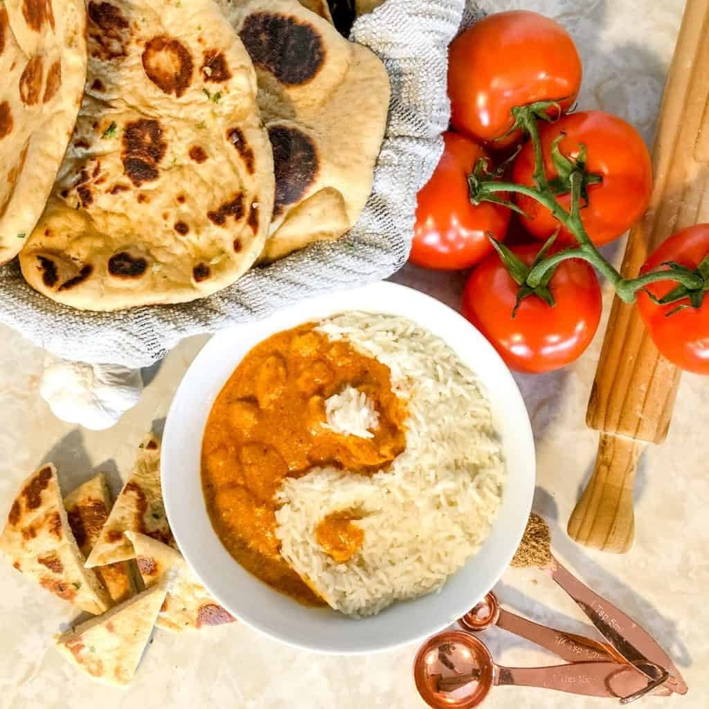
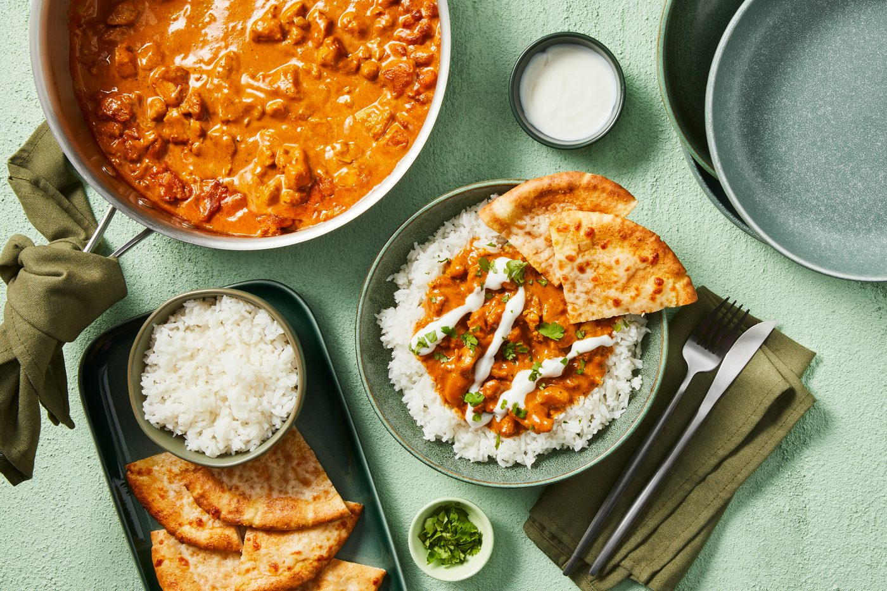
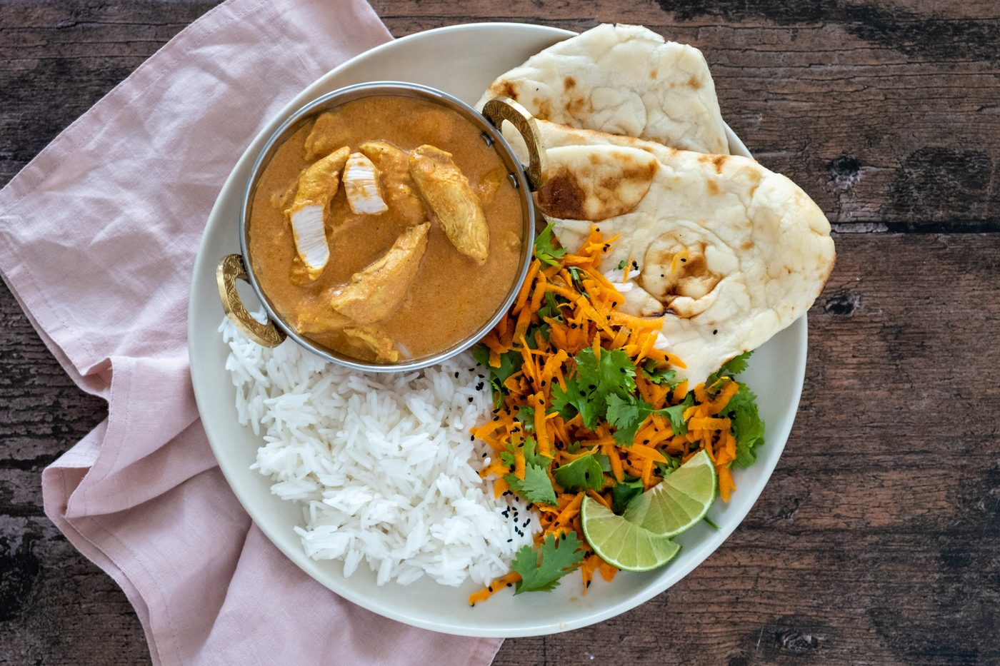
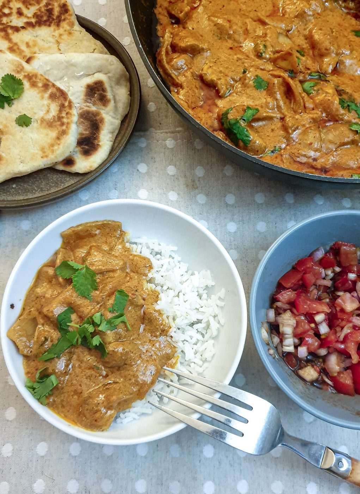
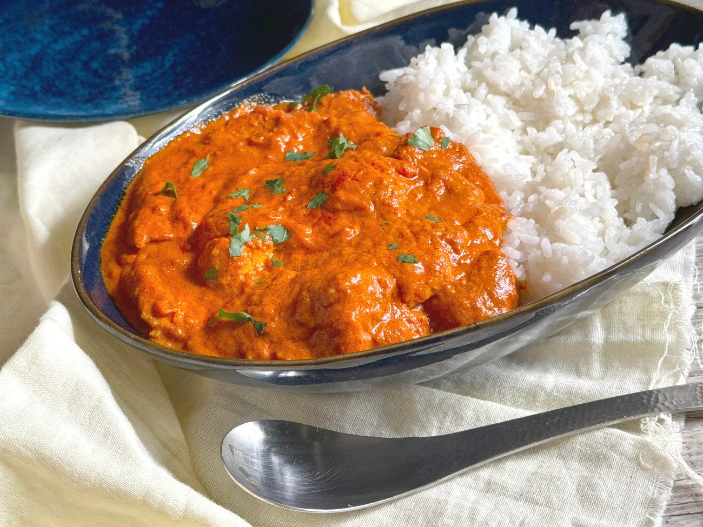
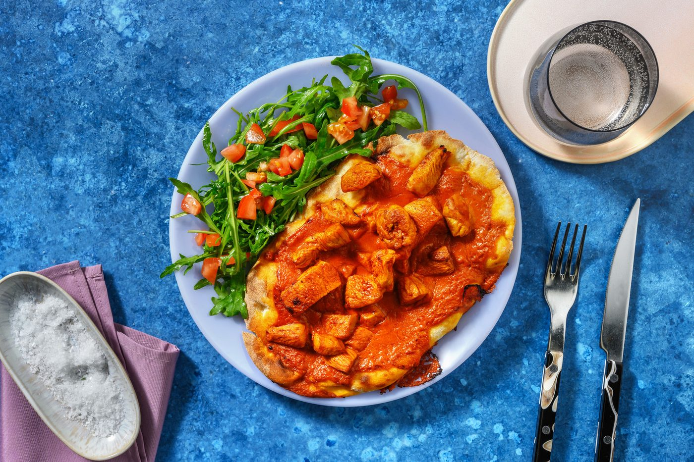

← Spice Route
Butter Chicken
Delhi's most famous export: charred yogurt-marinated chicken folded into a velvet tomato gravy.
Delhi's most famous export: charred yogurt-marinated chicken folded into a velvet tomato gravy.
Butter chicken was invented by accident-saving-cuisine: in 1950s Delhi, cooks at Moti Mahal — famous for tandoori chicken — braised leftover tandoori pieces in a tomato-butter gravy so they wouldn't dry out overnight. The rescue dish outgrew the original. Murgh makhani now shadows every tandoor on earth.
The architecture matters. Yogurt-marinated chicken gets charred first — under a broiler or on a hot grill — so it tastes of smoke. The gravy is tomatoes, cashews or cream, and whole spices simmered then blended dead-smooth. Only at the end do the two meet, with cream and a final knob of butter and a whisper of dried fenugreek (kasuri methi), which is the aroma everyone remembers but nobody can name.
serves 4-6 — tick items off as you shop; it saves as you go
Yogurt, ginger-garlic, spices, salt, chicken. Cover and refrigerate at least 4 hours, ideally overnight. The yogurt tenderizes and flavors in a way a 30-minute dip cannot.
Broil or grill at high heat until edges blacken in spots and the meat is just cooked, 12-15 minutes. Cut into large chunks. That char is a whole flavor layer — do not skip or fake it by boiling.
Melt half the butter, soften the onion, add tomatoes and soaked cashews, simmer 20 minutes until the fat starts to separate at the edges. Blend with an immersion blender until completely smooth — pass through a sieve if you want restaurant silk.
Simmer the chicken in the gravy 10 minutes. Add cream, remaining butter, crush the fenugreek between your palms directly over the pot so the aroma falls in. Salt, and a pinch of sugar to balance the tomatoes.
Ten minutes off the heat transforms it — the sauce thickens and the flavors knit. Serve with naan or basmati rice and a systematic plan to wipe the bowl with bread.






Images are web-sourced via image search and self-hosted. Original sources:
https://z-cdn.chatglm.cn/image-search-mcp/images-ppt/0ec60884ed91.jpghttps://z-cdn.chatglm.cn/image-search-mcp/images-ppt/26eac95ba3a9.jpghttps://z-cdn.chatglm.cn/image-search-mcp/images-ppt/36018d7bd8d3.jpghttps://z-cdn.chatglm.cn/image-search-mcp/images-ppt/5da356a20ba9.jpghttps://z-cdn.chatglm.cn/image-search-mcp/images-ppt/8cd92c27fff4.jpeghttps://z-cdn.chatglm.cn/image-search-mcp/images-ppt/d5df62083296.jpghttps://z-cdn.chatglm.cn/image-search-mcp/images-ppt/ec68577ddd7c.jpgVerified working videos — click a card to load the embed.


Powered by GitHub Issues — the backup kitchen. One issue per recipe; your comment lands in the repo.